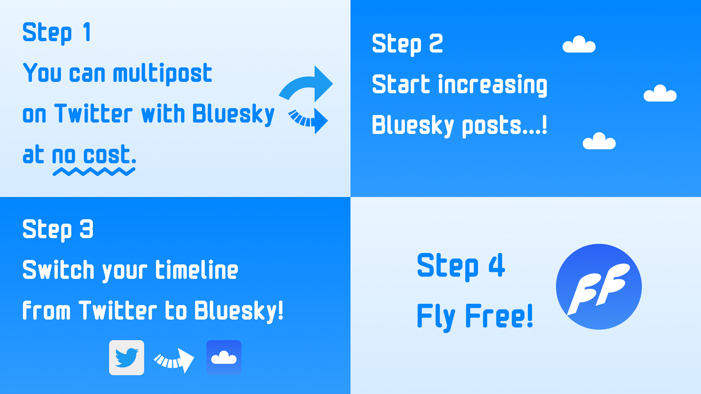
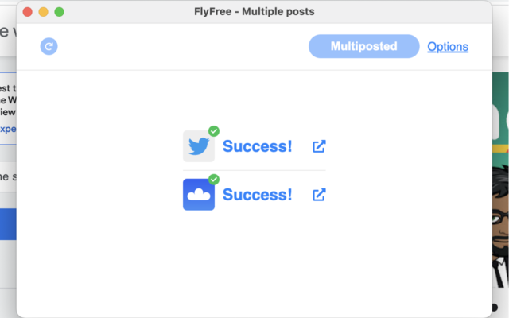

Twitter と Bluesky にマルチポストできるツールを作ってみた
超お久しぶりです！
お久しぶりとか言ってるうちに Twitter が無くなってしまいましたね。わお！ 🤗
SNS に関連したツールを作ってみたので、今日はその紹介記事です！
ねんがんの Bluesky アカウントをてにいれたぞ
2023 年の 3 月か 4 月ごろだったでしょうか。
ようやく Bluesky のアカウント を手に入れました！わーい 🙌
さてどうやって活用しようかと考えていたのですが、とりあえず 両方に投稿 してみて、色々考えてみようという考えに至りました。
- 同じ投稿を Twitter と Bluesky に投稿
- 画像付きの投稿も極力同じように投げる
- 一旦手動でやってみる
両方に同じ内容を投稿して、全く違和感なく Bluesky の方が使えるのなら、もはや Bluesky で良いわけです。
同時投稿をしてからの気づき
気付いたことを書き出してみます。
- 同時投稿はめんどい
- 超めんどい 🥺
- 僕が同時投稿したいときは、大まかに 2 通り
- 仕事をしながら仕事に関連した調べごとを流すとき
- 外に出ているときに思ったことや見たものを流すとき
仕事をしながら仕事に関連した調べごとを流すとき
- よく使う技術だったり、調べてみて意外と知らなかったこととか
- 大部分が PC からの投稿
- URL を含むのでリンクカード、たまに画像のシェア
外に出ているときに思ったことや見たものを流すとき
- 大部分がスマートフォンからの投稿
- 画像とテキストが中心
いずれにしても同時投稿はめんどい
同じ情報を複数の SNS に流すのはとにかくめんどいです 🥺
そして 7 月ごろになり、本格的に Twitter が壊れ始めた のをみて、
なぜわざわざ手間をかけてまで Twitter にも投げているのだろう？
もはや Bluesky だけでいいのでは・・・？
と思うようになり、それから Twitter における本格的な投稿はやめてしまったのでした。
（実はこのタイミングで今の原形的なツールは作ってたんですが、 Twitter を見に行かなくなってしまい、同時投稿のツールを作る理由も無くなって少し放置気味になっていたのは別の話）
SNS の檻に閉じ込められる
同時投稿を試してる間に、同じように Bluesky と Twitter の両方を活用してる人を何人か見かけたのですが、大半の人は Twitter に再び戻ってしまい、 Bluesky を 休眠アカウントのように保持しているだけ 、という状態になってしまっていました。
まあ、誰がどの SNS にどれだけ投稿するか？なんて、それこそ その人の自由 なので、僕を含む 外野がとやかく言うことではない のですが、それにしても 人はなぜ Twitter から逃れられないのでしょうか？
その頃から少しまじめに考え始めました。
Twitter に戻ってしまう理由
- あの人の投稿は Twitter でしか見られないから
- Bluesky の知り合いを見ても、アカウントはあるのに投稿してないから
- 投稿に対する反応が気になりすぎてやめられない
こんなところでしょうか？
そう！まさしく ネットワーク効果 ！なんて恐ろしい子・・・！
ネットワーク効果から抜け出すには？
Bluesky でよくアカウント数が議論にされるんですけど、重要なのは アカウント数よりも投稿数・投稿量 だと思うんですよね。 SNS における 存在というのは投稿と同義 であり、投稿していなければ存在していないのと等しいわけです。
つまり、アカウントはあるけど、投稿してないから存在してないのと同じ、存在してないから見に行かないわけです。
道理ですね 🤔
ではネットワーク効果から抜け出すにはどうすれば良いのでしょうか？とある 1 つの 巨大 SNS のネットワーク効果を打破するには、別のネットワークを強化すれば良い のです 🤗
そう、パン 🍞 が無ければケーキ 🍰 を食べればいいじゃない！ 😋
せめて PC 使ってるときに、 仕事をしながら仕事に関連した調べごとを Bluesky にもコストゼロで流すことができれば 、もっと Bluesky においてもその人の存在が認識され、 Bluesky が活用されやすくなるのかもしれないと、そう考えました。
SNS の檻から逃れる方法
上記で触れたネットワーク効果、つまりは SNS の檻から逃れる方法を画像 1 枚でまとめると以下です。

- いつも Twitter に投稿しているように Bluesky にも ついでにノーコストで投稿 できるようにする
- ノーコスト ってところが超大事
- PC だけで割り切って作る（≒ 拡張機能）
- 使うと Bluesky の投稿数が増え始める
- 投稿は存在と同義 なので、実際に Bluesky にいる人が増えるように見える
- 休眠アカウントが息を吹き返し始める
- そのうち Bluesky の方がメインでも良くね？ となる
- 同じ情報が Twitter と Bluesky に流れてるのなら、どっち見てもいいじゃん
- もう Twitter 見たくないニャン・・・ 🐱
- SNS ごとに蛇口をつけて流量をコントロールするイメージ
- SNS の檻から逃れて 自由に空を飛べる ようになる 🪶 🪶
- Twitter に軸足を置き続けてもいいし、 Bluesky に軸足移しても良し
という思想を元に作られたツールなので、 FlyFree という名前にしました。
こんな感じで（僕の場合は） Twitter に一時停止させつつ、 Bluesky にだけ投稿してます。

両方に投稿するとこんな感じにそれぞれの投稿結果（Success / Error）が表示されます。
ということで、ぜひとも使ってみてください！ 感想お待ちしてます！
- https://chrome.google.com/webstore/detail/flyfree/mjlfkhenobdjdonefhdbpigopndgeogm
- https://github.com/girigiribauer/fly-free
あっ感想は Twitter の方じゃなく Bluesky の方でお願いしますね 🙏
https://bsky.app/profile/girigiribauer.bsky.social （もう Twitter の方見たくないニャン 🐱 ）
おまけ
作りがいろいろ雑でごめんなさい。というか拡張機能周りがまだよく分かってません。 🥺
- エラーハンドリングが雑
- DOM 周りの処理が雑
- テストが少ない
- plasmo （拡張のフレームワーク）は便利な反面、クセがある
- 拡張 (Chrome Web Store) の公開フローがいまいちよく分かってない
- リジェクト疲れた 🥺
- これってリポジトリをそのまま公開とか無理なんだっけ・・・？
- 毎回 zip で渡すのめんどいのだが？ CI/CD は？
- タイッツーも対応していきたい
- API が足りない 🥺
少しずつアップデート かけていくつもりではいるので、長い目で見てもらえればと思います。（気が向いたらお手伝いもしてくれたら嬉しいです）
このツールの実装面については、長くなっちゃうのでまた改めて書きたいと思います！